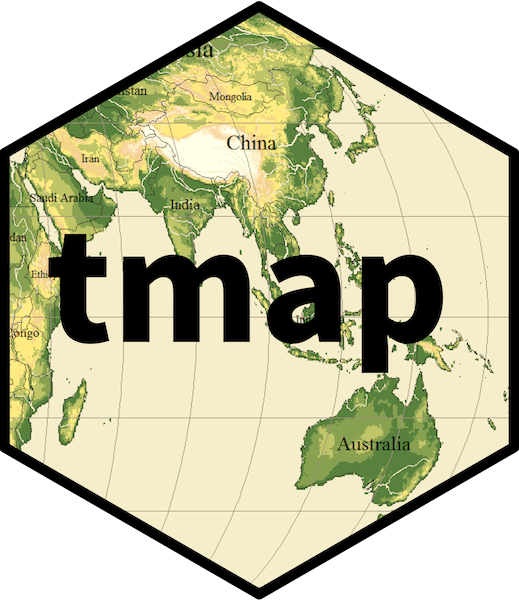
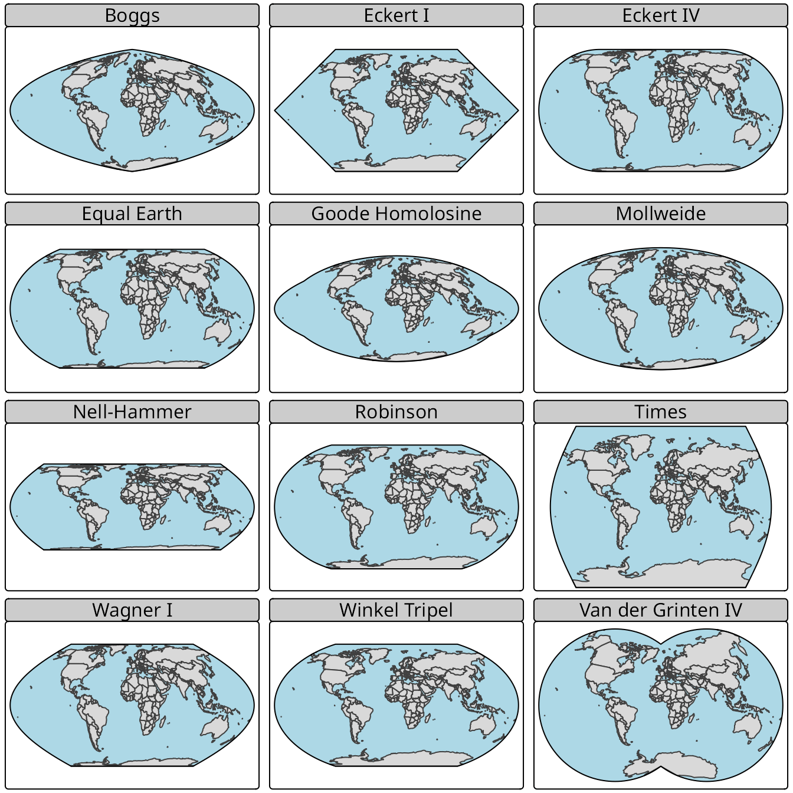
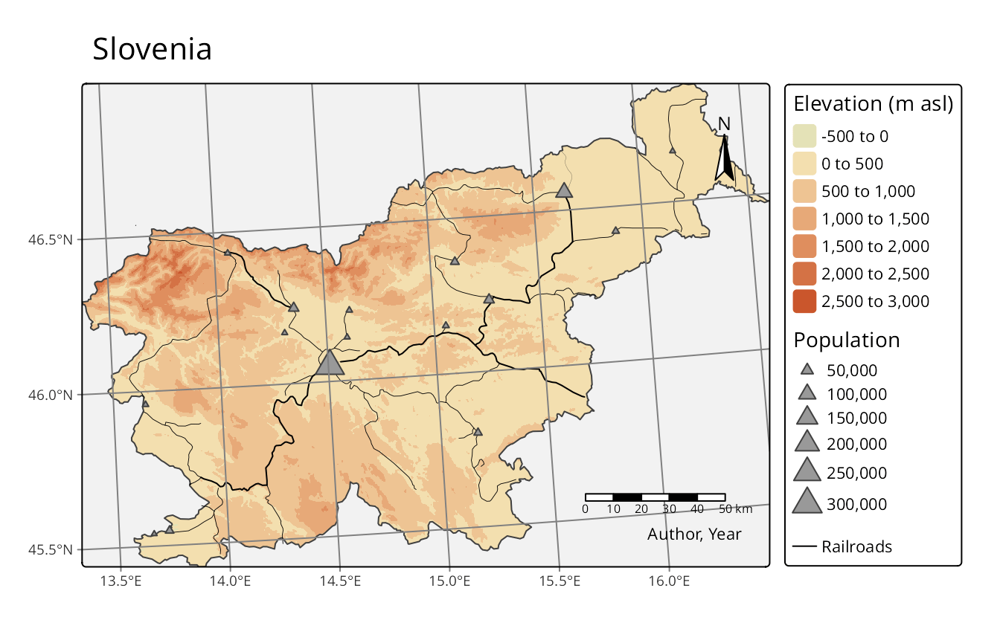
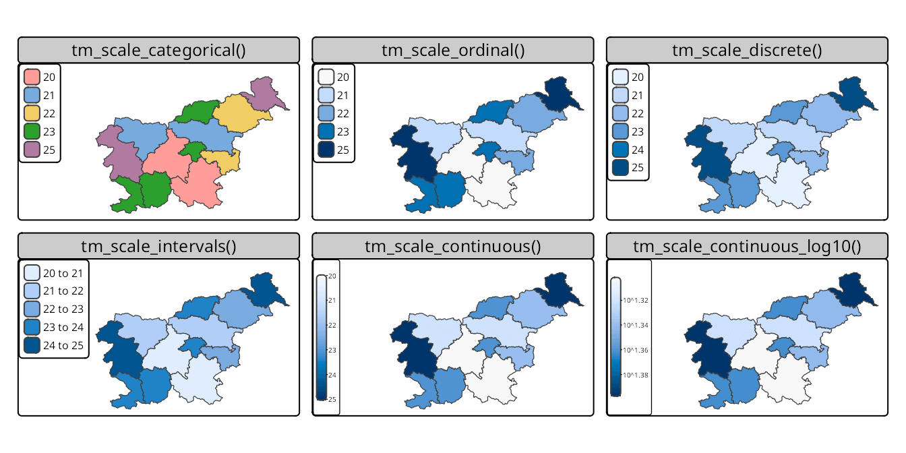

New, work-in-progress book on spatial data visualization in R
![]()
We want to introduce a new, work-in-progress book on spatial data visualization in R using the tmap package. The current version of the book, titled Spatial Data Visualization with tmap: A Practical Guide to Thematic Mapping in R, is available online at https://tmap.geocompx.org/. This blog post provides an overview of the book, its current status, and how you can get involved in its development.
The tmap package
The tmap package is a powerful tool for creating thematic maps in R. Its development started more than a decade ago, and it has since become one of the most popular packages for spatial data visualization in the R ecosystem. It allows to create various types of maps, from simple static maps to complex interactive visualizations and web maps.

In recent years, tmap has undergone significant changes that are now available in version 4.0. It includes an overhaul of the internal package’s structure, unified and expanded syntax, and new features that enhance its capabilities. These features include improved defaults (e.g., color palettes), additional options for positioning map elements, tools to assist in selecting map projections, the ability to create bivariate maps, expanded faceting options, and more.

Additionally, a system of extensions has been introduced, allowing creation of packages that add new map layers, allow for support of other spatial classes, or provide connections to additional visualization libraries. Currently, there are several extensions available, including tmap.cartogram, tmap.glyphs, tmap.networks, and tmap.mapgl.
Given the broad range of features and capabilities of the tmap package, we feel there is a need for comprehensive documentation and guidance on how to use it for spatial data visualization effectively. This is where the new book comes in.
Book overview
The book’s idea is to provide a practical guide to creating clear, effective maps in R with the tmap package. It is designed for a broad audience, including beginners in geospatial analysis, experienced GIS users transitioning to R, and anyone interested in visualizing spatial data.

The book covers the whole process of thematic mapping with tmap, from loading and preparing spatial data to creating and customizing maps for various audiences. In it, we try to combine concise explanations, reproducible code, and tips on good design and geospatial practices.

The book is divided into five general parts:
- Basics. It should allow you to understand the fundamental concepts of tmap and to create simple maps quickly.
- Building blocks. This part explains the core components of tmap, including shapes, layers, and visual variables, and shows how to customize map appearance with legends, scales, and layouts.
- Adding new tools. The goal of this part is to provide a deeper understanding of tmap features, including map projections, map arrangements, faceting, and animations.
- Expanding the toolbox. This part focuses on creating interactive maps, integrating tmap maps into web apps, and extending tmap with new layer types and spatial data classes.
- Mastering the craft. The final part aims to help you apply good design practices to create maps that are clear, consistent, and effective.
Current status and how to get involved
The book is currently a work in progress, with chapters belonging to the first three parts mostly completed. Thus, if you are interested in learning the basics of tmap and its core components, especially for static maps, you can already start using the book. The remaining chapters, those in parts four and five, are still under development.
The tmap book is a part of the geocompx project, which aims to provide open-source resources for geospatial analysis and visualization in R. As such, the book is open for contributions from the community. If you are interested in contributing to the book, you can do so by:
- Reporting issues or suggesting improvements
- Providing feedback on the book’s content and structure
- Submitting pull requests with new content, examples, or corrections
- Sharing the book with others who might find it useful
The best way to get involved is through the book’s GitHub repository, our Discord server, or our social media channels.
We invite you to contribute and join us in making it a valuable resource for the R, R spatial, and geospatial community, in general.
Reuse
Citation
@online{nowosad2025,
author = {Nowosad, Jakub and Tennekes, Martijn},
title = {New, Work-in-Progress Book on Spatial Data Visualization in
{R}},
date = {2025-10-14},
url = {https://geocompx.org/post/2025/tmap-bp1/},
langid = {en}
}